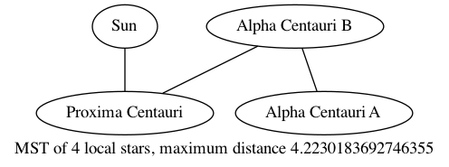
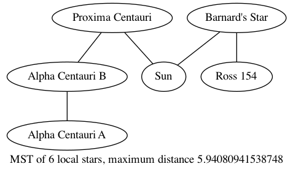
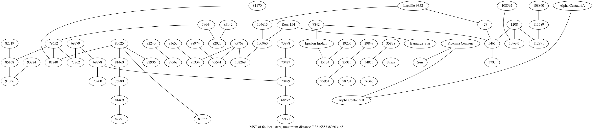

2020-10-09T23:07:52-07:00
I am curious about the structure of the minimum spanning tree of the galaxy: If there is a technological limit on the distance an interstellar colonization mission, then the MST of the local group of stars would tell us how far it would be possible to travel making “hops” less than that limit.
For example, at 4.2 LY, we could reach Proxima Centauri, then probably also hop to WISE-1049. A little farther, and we could get even more. How long a hop would be needed to get to the center of the galaxy? How does the connected component increase with hop size?
In order to answer these question, I downloaded the Hipparcos Catalogue, a compilation of locations of tens of thousands of stars by ESA in the early 90’s. I wrote a script (which you can see in full here) to parse the data into cartesian coordinates, and then used the mlpack library to compute the Euclidean Minimum Spanning Tree of these points (this EMST problem itself seems to have some nice computational geometry, but that will have to wait for another post).
As a sanity check, I sorted the stars by distance and print out the distance in light years to the ten nearest stars (I’ve written the common name for each star next to it):
The ten nearest stars are:
A star at distance 4.2230183692746355, at right ascension 14 29 47.75 and declination -62 40 52.9: HIP Number 70890 (Proxima Centauri)
A star at distance 4.394927743682801, at right ascension 14 39 39.39 and declination -60 50 22.1: HIP Number 71681 (Alpha Centauri B)
A star at distance 4.394927743682801, at right ascension 14 39 40.90 and declination -60 50 06.5: HIP Number 71683 (Alpha Centauri A)
A star at distance 5.94080941538748, at right ascension 17 57 48.97 and declination +04 40 05.8: HIP Number 87937 (Barnard\'s Star)
A star at distance 8.311834294449236, at right ascension 11 03 20.61 and declination +35 58 53.3: HIP Number 54035 (Lalande 21185)
A star at distance 8.600943480240185, at right ascension 06 45 09.25 and declination -16 42 47.3: HIP Number 32349 (Sirius)
A star at distance 9.69318764010307, at right ascension 18 49 48.96 and declination -23 50 08.8: HIP Number 92403 (Ross 154)
A star at distance 10.495780457415542, at right ascension 03 32 56.42 and declination -09 27 29.9: HIP Number 16537 (Epsilon Eridani)
A star at distance 10.732358595399408, at right ascension 23 05 47.17 and declination -35 51 22.7: HIP Number 114046 (Lacaille 9352)
A star at distance 10.8871212268572, at right ascension 11 47 44.04 and declination +00 48 27.1: HIP Number 57548 (Ross 128)You can check this against Wikipedia’s distances of nearby stars. You may notice that some stars on that table like Luhman 16 and WISE 0855−0714 don’t show up in this output - they were only discovered recently, and aren’t in the Hipparcos Catalogue. However, there are some stars, such as Wolf 359 and Luyten 726-8, which were discovered before 1990 but aren’t visible here. Not sure what the deal is there.
After messing up the code a few times, I managed to get the mlpack emst algorithm working. Without further ado here are the results.

The nearest star to the sun is Proxima Centauri, at 4.22 light years. Even this closest neighbor has a planet in the habitable zone, so it’s an excellent target for humankind’s first interstellar voyage. Once we’ve stopped at Proxima Centauri and refuelled our interstellar spaceship, the rest of the Alpha Centauri system is just a short 10 light week hop away.

While it would be exciting to get to the Alpha Centauri system, it’s kind of a dead end. They are the closest system to us, but we are the closest system to them. The closest other system to either of us is Barnard’s star, which is 5.94 light years away. Barnard’s star is actually moving closer to us relatively quickly, and will briefly be the closest star to the sun in about 10000 years. Once we get to Barnard’s star, we should be able to jump to Ross 154.

Once we get the capability to jump 7.36 light years in one go, things really open up. From Ross 154 we can jump to a 7th star, and from there to a branching array of a total of 64 stars!
After this, nothing interesting really happens - each additional light year giving you access to more and more stars.
| With x light years | You can get to x stars |
|---|---|
| 4 | 1 |
| 5 | 4 |
| 6 | 6 |
| 7 | 6 |
| 8 | 91 |
| 9 | 333 |
| 10 | 1001 |
| 11 | 1741 |
| 12 | 3613 |
| 15 | 10641 |
| 20 | 23520 |
It’s cool to think that we are a part of a sort of stellar archipelago which is 7.36 light years off the shore of a big galactic mainland.
Obviously the Hipparcos catalog is incomplete, and there are stars that have been discovered since it was conducted. Honestly, I was a bit surprised that the MST grows as slowly as it does as the jump distance gets bigger. Perhaps part of the reason for this is that its easier to see stars near Earth, so the catalog is biased in a way that increases the concentration of stars near earth.
I mentioned Barnard’s star is moving towards us. It begs the question: If it’s only really possible to make a jump of say, 2 light years or less, how long would we have to wait before another star passes close enough for us to hitch a ride? Wikipedia has a nice table for this too.
Related mathematical questions to this post: If you create an MST on a 2D/3D Poisson process of points, what is the distribution of number of neighbors of a single point? What is the expected connected component size of an MST as a function of the maximum distance?